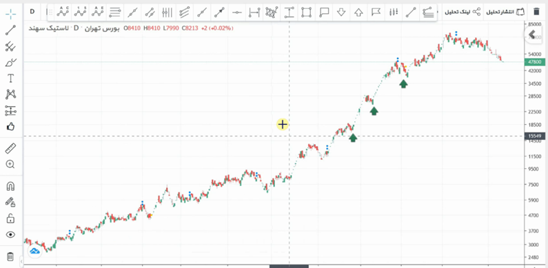
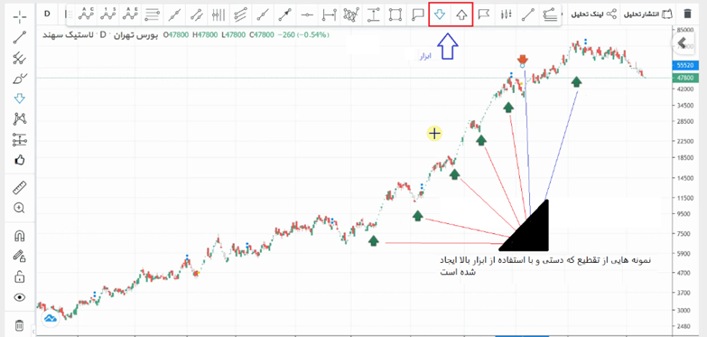

An Introduction to Decomposition#
One of the most common tasks in signal processing is segmentation. Sometimes, segmentation becomes a foundation for signal decomposition, although signal decomposition itself has not yet been discussed. The reason for providing numerous examples of segmentation is that it can serve as a basis for signal decomposition.
As previously demonstrated, the word “sig” was broken down into its structural components: “s”, “i”, and “g”. Now, the word “sig” can be divided into these segments. Another good signal that is readily available is the stock market signal, which is popular today. In Figure 1, the stock of Sahand Rubber is shown. Using the tool depicted in Figure 2, this signal can be manually segmented (segmentation is a more appropriate term here). This process is called segmentation. By doing this, one can identify the rise and fall of the stock.


Signal Decomposition#
In this session, we will discuss signal decomposition. The signal \( x(t) \) is decomposed based on the basis functions \( \phi_k(t) \). In other words, a combination of basis functions constructs the signal \( x(t) \). Now, if the basis function is defined as \( \phi_k(t) = t^k \), we have:
Which simplifies to:
Method for Calculating Coefficients#
Calculating \( \alpha_0 \):#
Using the Maclaurin expansion:
Calculating \( \alpha_1 \):#
By differentiating Equation 1, we get:
Evaluating at \( t = 0 \):
Similarly, other coefficients can be calculated. In general:
Where \( x^{(k)} \) denotes the \( k \)-th derivative of \( x(t) \) and \( k! \) is the factorial of \( k \).
This method is the Taylor series expansion of the signal based on the basis function \( t^k \). If we use other basis functions, such as sine and cosine or other functions, we obtain different decompositions of the signal.
Example: Signal \( x(t) = e^t \)#
The \( k \)-th derivative of \( x(t) \) is:
Evaluated at \( t = 0 \):
So the coefficients are:
Thus, the Taylor series expansion of \( e^t \) is:
Which is the well-known expansion of the exponential function.
Example: Signal \( x(t) = \sin(t) \)#
To calculate the coefficients, we compute the derivatives of different orders at \( t = 0 \):
First derivative:
\[ x'(t) = \cos(t), \quad x'(0) = \cos(0) = 1 \]Second derivative:
\[ x''(t) = -\sin(t), \quad x''(0) = -\sin(0) = 0 \]Third derivative:
\[ x'''(t) = -\cos(t), \quad x'''(0) = -\cos(0) = -1 \]Fourth derivative:
\[ x^{(4)}(t) = \sin(t), \quad x^{(4)}(0) = \sin(0) = 0 \]
The coefficients are:
\( \alpha_0 = \dfrac{x(0)}{0!} = \dfrac{\sin(0)}{0!} = 0 \)
\( \alpha_1 = \dfrac{x'(0)}{1!} = \dfrac{1}{1} = 1 \)
\( \alpha_2 = \dfrac{x''(0)}{2!} = \dfrac{0}{2} = 0 \)
\( \alpha_3 = \dfrac{x'''(0)}{3!} = \dfrac{-1}{6} = -\dfrac{1}{6} \)
\( \alpha_4 = \dfrac{x^{(4)}(0)}{4!} = \dfrac{0}{24} = 0 \)
Thus, the Taylor series expansion of \( \sin(t) \) is:
Which is the standard Taylor series expansion of the sine function.
Signal Decomposition#
In this section, we explore signal decomposition. The signal \(x(t)\) is decomposed based on basis functions \(\phi_k(t)\). In other words, a combination of basis functions constructs the signal \(x(t)\). If the basis function is defined as \(\phi_k(t) = t^k\), then:
Calculating Coefficients#
To calculate \(\alpha_0\):
Using the Maclaurin series expansion, we have:
To calculate \(\alpha_1\), we take the derivative of Equation 1:
At \(t=0\):
Similarly, other coefficients can be calculated. In general:
The signal, after calculating the coefficients, will be:
Key Points#
The derivative of the signal cannot be easily obtained from the signal itself.
Generally, \(x(t)\) is decomposed based on a limited number of coefficients.
Typically, only a limited number of signal samples are available, and the derivative is not provided.
For example, let’s consider the signal in Figure 3. We want to approximate the signal in Figure 3 with a polynomial. The basis functions are:
We want to compute a polynomial approximation \(x(t)\) in the form:
Given some samples, let \(t_0\) to \(t_n\) be these points:
And similarly for \(t_{n-1}\):
This forms a system of \(n\) equations with 3 unknowns, which can be written as:
Let \(d\) be the left vector, \(A\) be the middle matrix, and \(\alpha\) be the right vector. The system is represented as:
Multiply both sides by \(A^T\):
We know \(A^T A\) is a square \(3 \times 3\) matrix and thus invertible. Solving for \(\alpha\):
import numpy as np
import matplotlib.pyplot as plt
def create_design_matrix(t, degree):
"""Create a design matrix for polynomial regression up to a given degree."""
A = np.ones((t.size, degree + 1))
for i in range(1, degree + 1):
A[:, i] = t ** i
return A
# Parameters
num_points = 50 # Number of data points
period = 2 * np.pi # One period of the sine wave
degree = 3 # Polynomial degree
t = np.linspace(0, period, num_points) # Time instances
# Generate noisy sinusoidal data
true_values = np.sin(t) # True values (no noise)
noise = np.random.normal(0, 0.1, num_points) # Gaussian noise
x = true_values + noise # Observed values with noise
# Construct the design matrix A for the given polynomial degree
A = create_design_matrix(t, degree)
# Compute A^T A and A^T d
A_T_A = np.dot(A.T, A)
A_T_d = np.dot(A.T, x)
# Solve for alpha using the normal equation
alpha = np.linalg.inv(A_T_A).dot(A_T_d)
# Predict values using the fitted model
t_fit = np.linspace(0, period, 100) # Higher resolution for plotting
A_fit = create_design_matrix(t_fit, degree)
x_fit = A_fit.dot(alpha)
# Plotting
plt.figure(figsize=(10, 6))
# Plot noisy data
plt.scatter(t, x, color='blue', label='Noisy data')
# Plot true sine wave
plt.plot(t, true_values, color='green', linestyle='--', label='True sine wave')
# Plot fitted polynomial
plt.plot(t_fit, x_fit, color='red', linestyle='-', label='Fitted polynomial')
plt.xlabel('Time (t)')
plt.ylabel('Value')
plt.title(f'Polynomial Fit to Noisy Sinusoidal Data (Degree {degree})')
plt.legend()
plt.grid(True)
plt.show()
Basis Functions and Orthogonal Sets#
In the context of decomposition, instead of using polynomial basis functions of the form \( t^k \), we might use Gaussian functions. This means that a set of Gaussian signals can be used to construct our signal. The question then becomes: what are the coefficients for these Gaussian functions? The Gaussian function is given by:
The goal is to reconstruct the desired signal using a combination of the signals described by the equation above:
In this equation, if \( x(t) \) is known and the coefficients \( \alpha_i \) are unknown, it represents a decomposition problem. Conversely, if the coefficients are known and \( x(t) \) is unknown, it represents a signal synthesis problem.
In Figure 5, a Gaussian signal with a mean of 5 and a variance of 2 is shown.
In Figure 6, a signal created by combining two Gaussian signals is displayed. The first Gaussian signal has a mean of 5, a variance of 2, and a coefficient of 2. The second Gaussian signal has a mean of 3, a variance of 1, and a coefficient of -1.
Similar to other basis functions, Gaussian signals can be used both for signal generation and for signal decomposition.
Reducing Computation of Coefficients and Simplifying the Process#
In the continuation, we will discuss reducing the computation of coefficients and simplifying this process.
During the coefficient calculation, the transpose of a matrix (Equation 4) needs to be computed, followed by three matrix multiplications, which can result in a very high computational cost if the matrices are large. A technique used in signal processing will be explored to make this calculation easier.
Instead of using Gaussian or polynomial signals, which are costly for calculating coefficients \( \alpha \), a basis signal from an orthogonal set is used. An orthogonal set means that the signals in the set are mutually perpendicular. Perpendicularity means that the inner product of two different signals is zero.
where \( E_{\phi_i} \) is the energy of \( \phi_i \). The inner product for continuous functions needs to be defined. Consider two functions \( f(t) \) and \( g(t) \). Their inner product is calculated as follows:
For a better understanding, Figure 7 shows several signals. In this image, the signals \( \phi_4 \) and \( \phi_5 \) are orthogonal over the half period of \( \phi_4 \), as indicated. Since \( \phi_4 \) is constant with a value of 1, and \( \phi_5 \) has a value of 1 over one half period and -1 over the other half period, their inner product is zero, confirming their orthogonality. Similar orthogonality is observed in other sections as well. Thus, these two signals are orthogonal to each other.
Figure 5#
import numpy as np
import matplotlib.pyplot as plt
# Parameters
mean = 5
variance = 2
sigma = np.sqrt(variance) # Standard deviation
# Time vector
t = np.linspace(mean - 3 * sigma, mean + 3 * sigma, 1000)
# Gaussian function
def gaussian(t, mean, sigma):
return (1 / (sigma * np.sqrt(2 * np.pi))) * np.exp(-0.5 * ((t - mean) / sigma) ** 2)
# Generate Gaussian signal
g_signal = gaussian(t, mean, sigma)
# Plotting
plt.figure(figsize=(10, 6))
plt.plot(t, g_signal, label=f'Gaussian Signal\nMean = {mean}, Variance = {variance}')
plt.xlabel('Time (t)')
plt.ylabel('Amplitude')
plt.title('Gaussian Signal with Mean 5 and Variance 2')
plt.legend()
plt.grid(True)
plt.show()
Figure 6#
import numpy as np
import matplotlib.pyplot as plt
# Parameters for the first Gaussian signal
mean1 = 5
variance1 = 2
sigma1 = np.sqrt(variance1)
coefficient1 = 2
# Parameters for the second Gaussian signal
mean2 = 3
variance2 = 1
sigma2 = np.sqrt(variance2)
coefficient2 = -1
# Time vector
t = np.linspace(mean1 - 3 * sigma1, mean1 + 3 * sigma1, 1000)
# Gaussian function
def gaussian(t, mean, sigma):
return (1 / (sigma * np.sqrt(2 * np.pi))) * np.exp(-0.5 * ((t - mean) / sigma) ** 2)
# Generate Gaussian signals
g_signal1 = coefficient1 * gaussian(t, mean1, sigma1)
g_signal2 = coefficient2 * gaussian(t, mean2, sigma2)
# Combine the Gaussian signals
combined_signal = g_signal1 + g_signal2
# Plotting
plt.figure(figsize=(12, 8))
# Plot individual Gaussian signals
plt.plot(t, g_signal1, label=f'Gaussian Signal 1\nMean = {mean1}, Variance = {variance1}, Coefficient = {coefficient1}', linestyle='--')
plt.plot(t, g_signal2, label=f'Gaussian Signal 2\nMean = {mean2}, Variance = {variance2}, Coefficient = {coefficient2}', linestyle='--')
# Plot combined signal
plt.plot(t, combined_signal, label='Combined Signal', color='black')
plt.xlabel('Time (t)')
plt.ylabel('Amplitude')
plt.title('Combined Signal Using Two Gaussian Signals')
plt.legend()
plt.grid(True)
plt.show()
Procedure for Generating Haar Orthogonal Set#
In Figure 7, when \( \phi_1 \) has a value of 1, \( \phi_2 \) completes one full period. This means \( \phi_2 \) ranges from +1 to -1. Specifically, \( \phi_2 \) is +1 from 0 to \( T/2 \) and -1 from \( T/2 \) to \( T \), while \( \phi_1 \) is 1 from 0 to \( T \). The inner product of these two functions is analyzed as follows:
To compute this integral, the area under the curve is used, which equals:
This indicates that \( \phi_1 \) and \( \phi_2 \) are orthogonal to each other.
Thus, a new set of functions is used as basis signals. This set is represented as \( \psi \):
The orthogonality of this set is given by:
This set is called orthogonal.
Now, the energy \( E_{\phi_k} \) for the signals in Figure 7 is calculated. For example, if \( \phi_2 \) is integrated with itself, the result is equal to \( T \), which is referred to as the energy.
In the past, energy was evaluated for discrete signals. For continuous signals, the energy is calculated as follows:
If a set of functions is defined as follows:
with:
This set is called orthonormal. In this set, orthogonality exists, and the energy is 1.
import numpy as np
import matplotlib.pyplot as plt
def haar_mother_wavelet(x):
"""Compute the Haar mother wavelet function."""
return np.where((0 <= x) & (x < 0.5), 1,
np.where((0.5 <= x) & (x < 1), -1, 0))
def haar_daughter_wavelet(j, k, x):
"""Compute the Haar daughter wavelet function."""
return haar_mother_wavelet(2**j * x - k)
# Define the time vector
x = np.linspace(0, 1, 1000)
# Define levels and position for the Haar daughter wavelets
levels = range(1, 6) # Levels from 1 to 5
k = 0 # Position
# Create a figure for the plots
plt.figure(figsize=(12, 8))
# Plot Haar daughter wavelets for k = 0 and different levels
for i, level in enumerate(levels):
plt.subplot(len(levels), 1, i + 1)
plt.plot(x, haar_daughter_wavelet(level, k, x), label=f'Haar Daughter Wavelet (Level {level}, k={k})')
plt.title(f'Haar Daughter Wavelet (Level {level})')
plt.xlabel('x')
plt.ylabel('ψ(x)')
plt.grid(True)
plt.tight_layout()
plt.show()
Image with Haar#
import matplotlib.pyplot as plt
import numpy as np
import pywt
import pywt.data
# Load image
original = pywt.data.camera()
# Wavelet transform of image, and plot approximation and details
titles = ['Approximation', ' Horizontal detail',
'Vertical detail', 'Diagonal detail']
coeffs2 = pywt.dwt2(original, 'bior1.3')
LL, (LH, HL, HH) = coeffs2
fig = plt.figure(figsize=(12, 3))
for i, a in enumerate([LL, LH, HL, HH]):
ax = fig.add_subplot(1, 4, i + 1)
ax.imshow(a, interpolation="nearest", cmap=plt.cm.gray)
ax.set_title(titles[i], fontsize=10)
ax.set_xticks([])
ax.set_yticks([])
fig.tight_layout()
plt.show()
---------------------------------------------------------------------------
ModuleNotFoundError Traceback (most recent call last)
Cell In[5], line 4
1 import matplotlib.pyplot as plt
2 import numpy as np
----> 4 import pywt
5 import pywt.data
7 # Load image
ModuleNotFoundError: No module named 'pywt'
Homeworks: Denoising#
Denoising with Haar 1-D
Denoising with Haar 2-D
Examples of Orthogonal Sets#
Several examples of orthogonal sets on continuous signals are as follows:
Example 1: Set of sinusoidal functions with different frequencies: $\( \psi = \{ \sin(kt) ; k \in \mathbb{Z} \} \)$
To solve this example, two steps need to be taken:
Verify orthogonality: $\( \langle \phi_k(t), \phi_l(t) \rangle \text{ for } k \neq l \)$
Calculate energy: $\( \langle \phi_k(t), \phi_l(t) \rangle \text{ for } k = l \)$
If the first step yields zero, the set is orthogonal. The second step determines the energy.
Orthogonality Check: $\( \langle \sin(kt), \sin(lt) \rangle = \int_T \sin(kt) \cdot \sin(lt) \, dt = \int_T \frac{1}{2} \left[ \cos((k - l)t) - \cos((k + l)t) \right] dt \)$
The area under the curves of \( \cos((k - l)t) \) and \( \cos((k + l)t) \) over one period is zero, so the integral evaluates to zero. Therefore, the set is orthogonal.
Energy Check: $\( \langle \sin(kt), \sin(kt) \rangle = \int_T \sin^2(kt) \, dt = \int_T \frac{1}{2} \left[ \cos(0) - \cos(2kt) \right] dt = \frac{1}{2} \left[ \int_T 1 \, dt - \int_T \cos(2kt) \, dt \right] = \frac{1}{2} \left( T - 0 \right) = \frac{T}{2} \)$
Example 2: A more general example: Consider the set: $\( \psi = \{ \exp(jk\omega_0 t) ; k \in \mathbb{Z} \} \)$
Using Euler’s formula: $\( \exp(jk\omega_0 t) = \cos(k\omega_0 t) + j \sin(k\omega_0 t) \)$
Orthogonality and Energy Check: $\( \langle e^{jk\omega_0 t}, e^{jl\omega_0 t} \rangle = \int_T e^{jk\omega_0 t} \cdot (e^{jl\omega_0 t})^* \, dt = \int_T e^{jk\omega_0 t} \cdot e^{-jl\omega_0 t} \, dt = \int_T e^{j\omega_0 t(k - l)} \, dt \)\( \)\( = \int_T \left[ \cos((k - l)\omega_0 t) + j \sin((k - l)\omega_0 t) \right] dt \)$
The area under the curve of \( \sin((k - l)\omega_0 t) \) is zero. Similarly, for \( \cos((k - l)\omega_0 t) \), the area is also zero. Therefore, equation (15) equals zero for \( k \neq l \), confirming orthogonality between different functions.
For \( k = l \), to calculate energy: $\( \int \cos((k - k)\omega_0 t) \, dt + j \int \sin((k - k)\omega_0 t) \, dt = \int_T 1 \, dt = T \)$
Thus, equation (15) is completed as: $\( \langle e^{jk\omega_0 t}, e^{jl\omega_0 t} \rangle = \begin{cases} T & \text{if } k = l \\ 0 & \text{if } k \neq l \end{cases} \)$
The result shows that the mentioned set is orthogonal and each term’s energy is \( T \). To make this set orthonormal, you should select \( \phi_k(t) = \frac{1}{\sqrt{T}} e^{jk\omega_0 t} \).
Another orthogonal function : Legendre Polynomials#
Legendre Polynomials are a sequence of orthogonal polynomials that arise in the solution of Legendre’s differential equation:
Some key points about Legendre polynomials:
Definition#
Legendre polynomials \( P_n(x) \) are defined on the interval \([-1, 1]\) and are solutions to the Legendre differential equation.
Orthogonality#
The Legendre polynomials \( P_m(x) \) and \( P_n(x) \) are orthogonal over the interval \([-1, 1]\) with the following orthogonality relation:
where \( \delta_{mn} \) is the Kronecker delta, which is 1 if \( m = n \) and 0 otherwise.
Normalization#
Legendre polynomials are usually normalized such that:
First Few Legendre Polynomials#
\( P_0(x) \): \( 1 \)
\( P_1(x) \): \( x \)
\( P_2(x) \): \( \frac{1}{2}(3x^2 - 1) \)
\( P_3(x) \): \( \frac{1}{2}(5x^3 - 3x) \)
Properties#
Recurrence Relation: Legendre polynomials satisfy the recurrence relation:
\[ (n + 1) P_{n+1}(x) = (2n + 1) x P_n(x) - n P_{n-1}(x) \]Symmetry: \( P_n(x) \) are either even or odd functions, depending on whether \( n \) is even or odd, respectively.
Completeness: The set of Legendre polynomials forms a complete orthogonal basis for functions defined on the interval \([-1, 1]\) in the sense of expanding functions in terms of these polynomials.
import numpy as np
import matplotlib.pyplot as plt
from scipy.special import legendre
# Define the range of x values
x = np.linspace(-1, 1, 1000)
# Define the number of polynomials to plot
num_polynomials = 5
# Create a figure for the plots
plt.figure(figsize=(12, 8))
# Plot Legendre polynomials
for n in range(num_polynomials):
P_n = legendre(n)
plt.plot(x, np.polyval(P_n, x), label=f'Legendre Polynomial P_{n}(x)')
plt.title('Legendre Polynomials')
plt.xlabel('x')
plt.ylabel('P_n(x)')
plt.legend()
plt.grid(True)
plt.show()
import numpy as np
from scipy.special import legendre
from scipy.integrate import quad
def legendre_integral(m, n):
"""Compute the integral of the product of two Legendre polynomials."""
# Get the coefficients of the Legendre polynomials
P_m = legendre(m)
P_n = legendre(n)
# Define the polynomial product function
def poly_product(x):
return np.polyval(P_m, x) * np.polyval(P_n, x)
# Compute the integral over the interval [-1, 1]
integral, _ = quad(poly_product, -1, 1)
return integral
# Define the pairs of m and n to check
pairs = [(0, 0), (0, 1), (1, 1), (2, 2), (1, 2)]
# Compute and print the results
results = {}
for m, n in pairs:
integral = legendre_integral(m, n)
expected = (2 / (2 * max(m, n) + 1)) if m == n else 0
results[(m, n)] = (integral, expected)
# Print results
for (m, n), (integral, expected) in results.items():
print(f'Integral of P_{m}(x) * P_{n}(x) over [-1, 1]: {integral:.4f}')
print(f'Expected value: {expected:.4f}')
print('Orthogonality verified' if np.isclose(integral, expected) else 'Orthogonality NOT verified')
print()
Integral of P_0(x) * P_0(x) over [-1, 1]: 2.0000
Expected value: 2.0000
Orthogonality verified
Integral of P_0(x) * P_1(x) over [-1, 1]: 0.0000
Expected value: 0.0000
Orthogonality verified
Integral of P_1(x) * P_1(x) over [-1, 1]: 0.6667
Expected value: 0.6667
Orthogonality verified
Integral of P_2(x) * P_2(x) over [-1, 1]: 0.4000
Expected value: 0.4000
Orthogonality verified
Integral of P_1(x) * P_2(x) over [-1, 1]: 0.0000
Expected value: 0.0000
Orthogonality verified